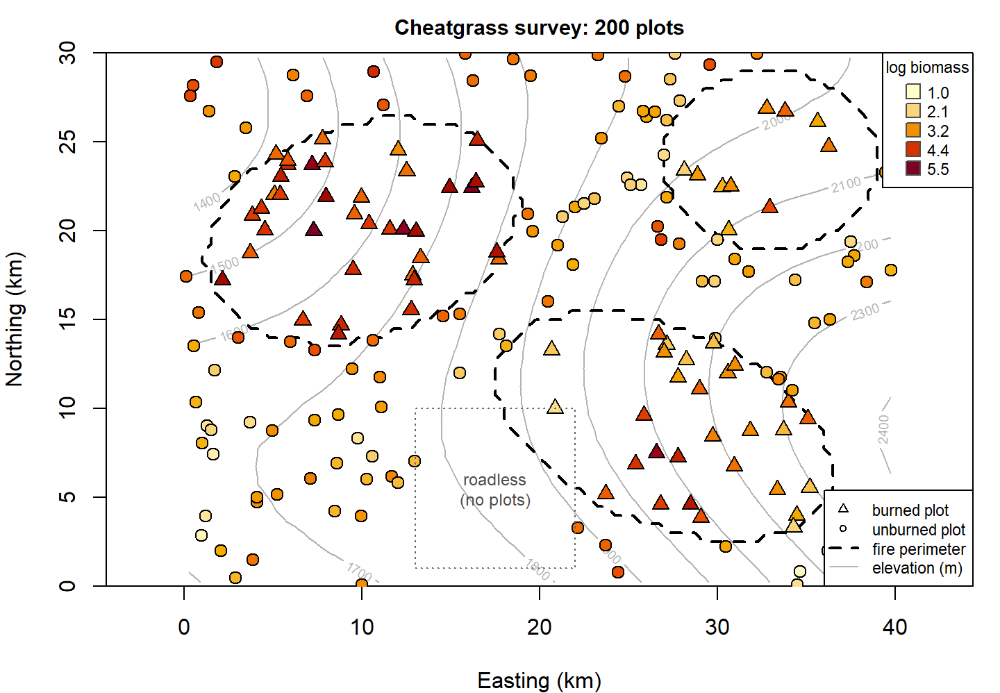
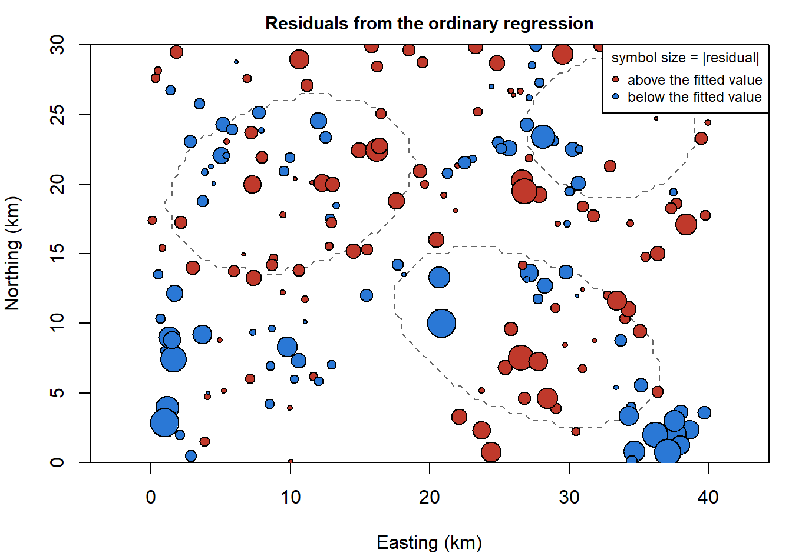
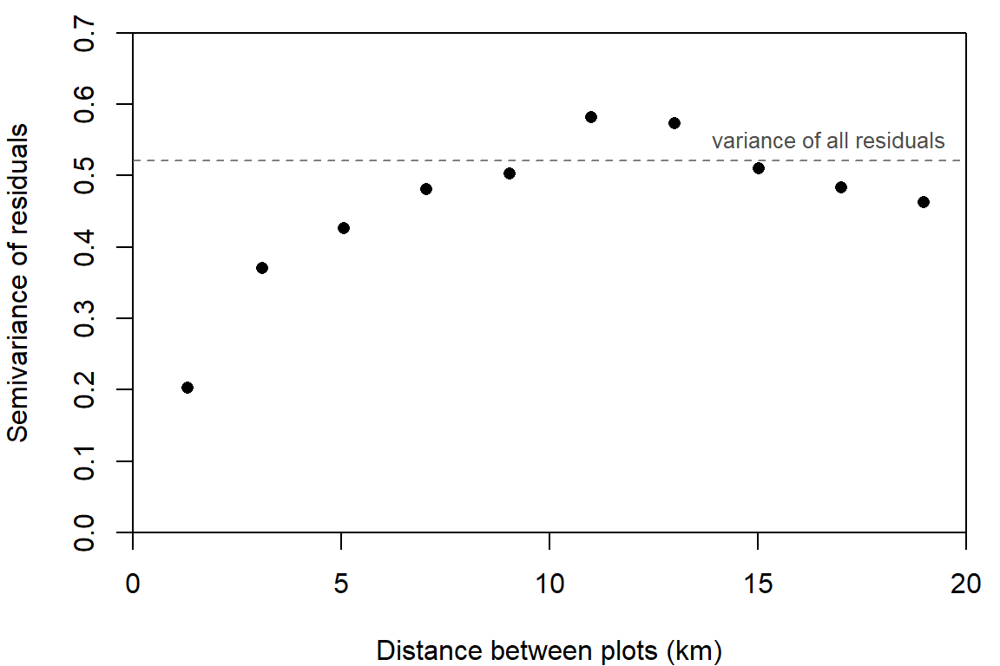
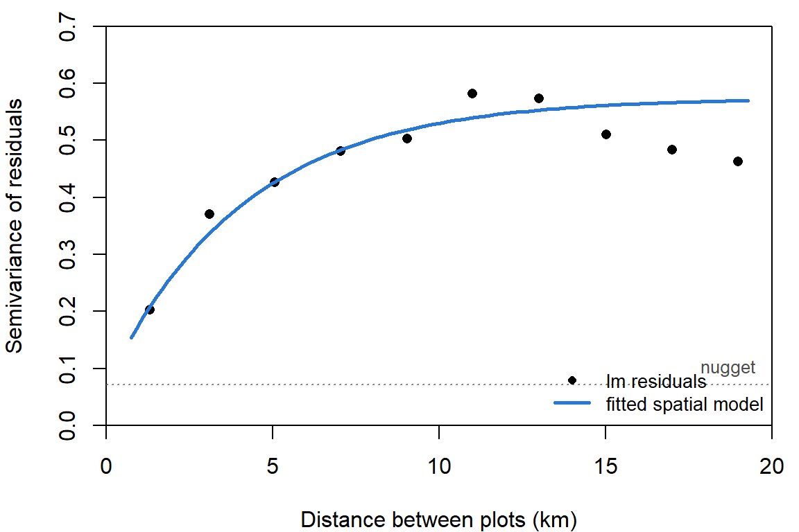
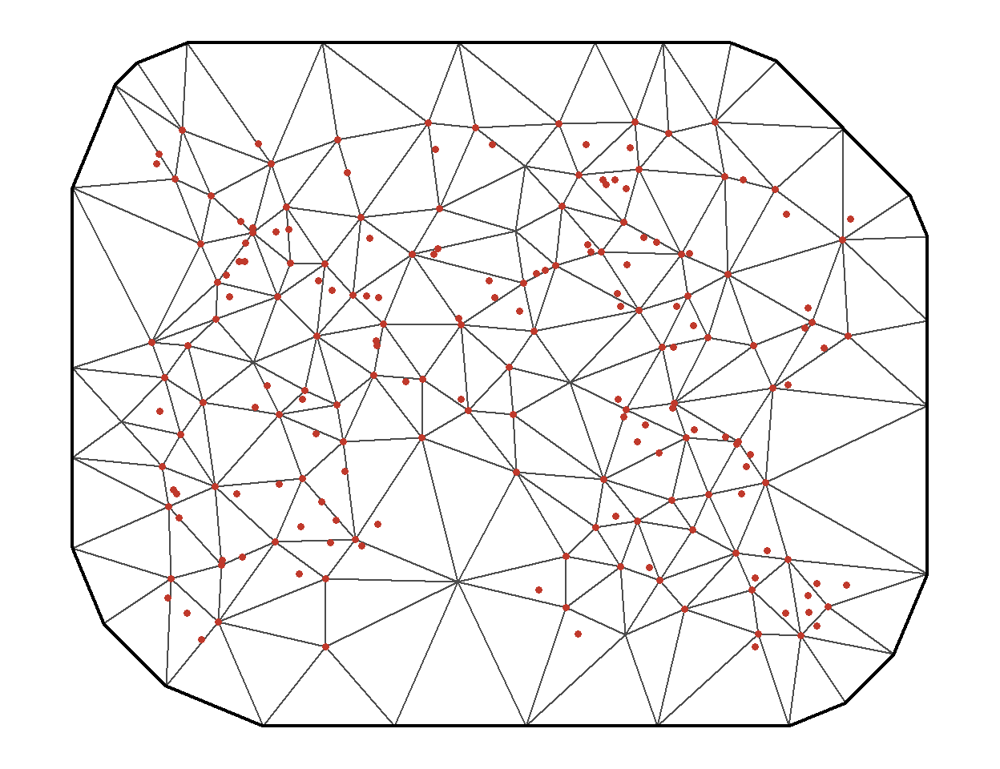
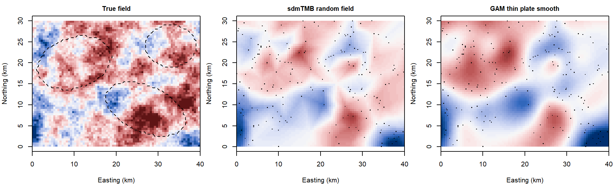
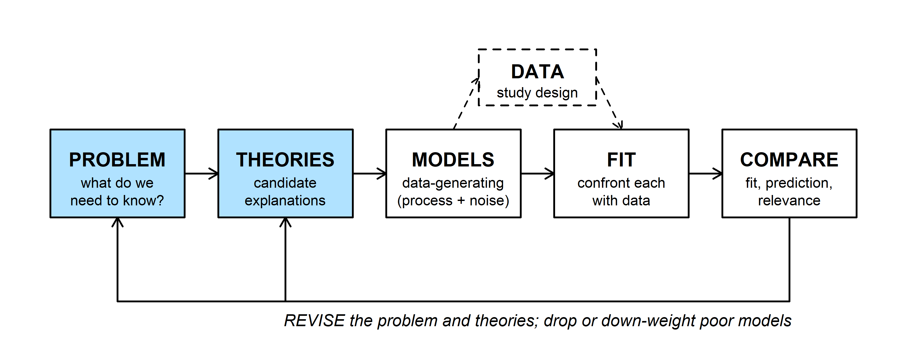
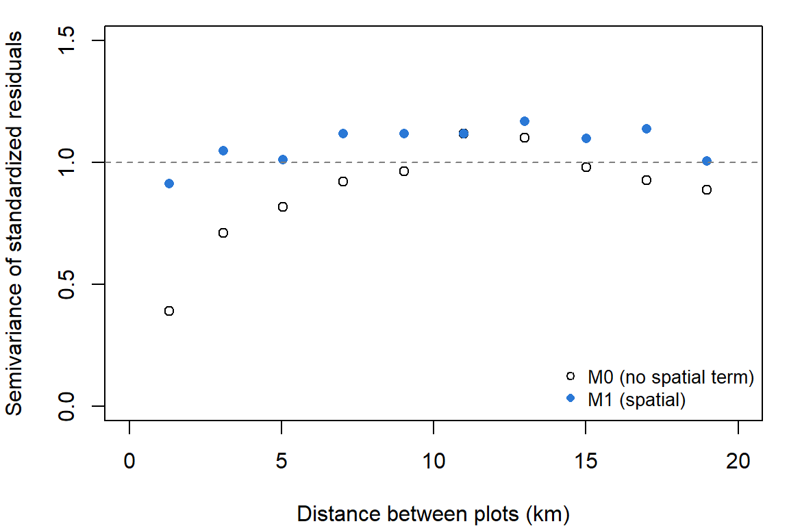
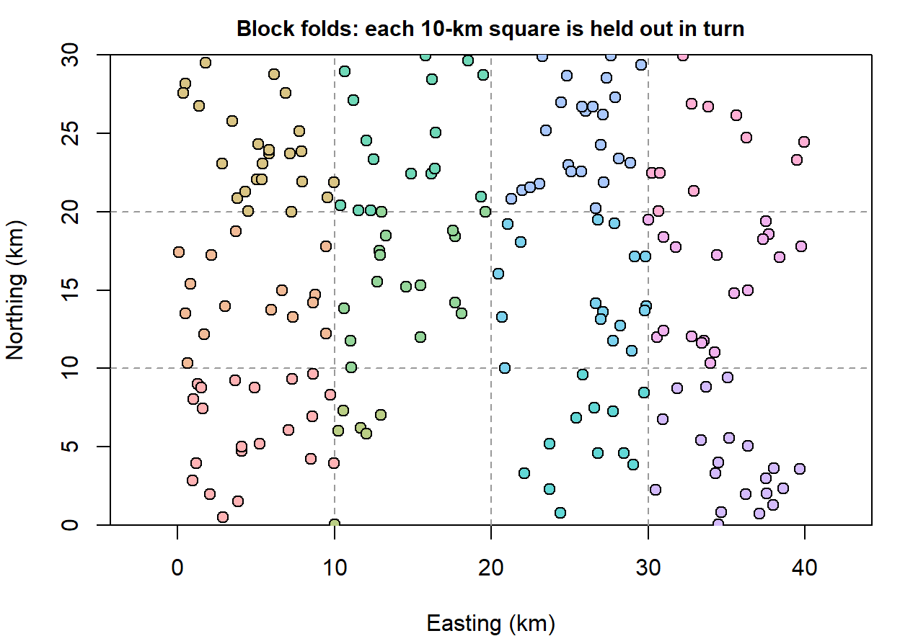
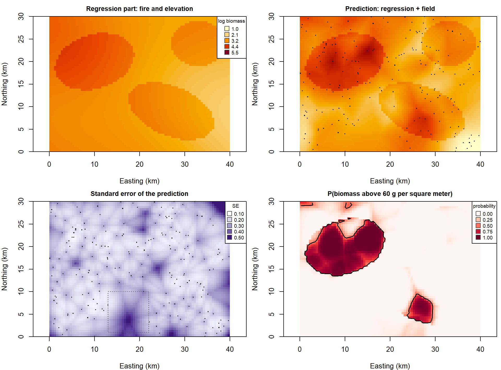

Week 14: Spatial Regression
NRES 746
Nov. 23-24, 2026
R code from this page is also in the companion script. Packages: mvtnorm, gstat (with sp), glmmTMB, sdmTMB, INLA, fmesher, mgcv.1 Reading: Bolker section 10.3 (correlations in time-series and spatial data). The data are in CheatgrassSurvey.csv (the plots) and CheatgrassGrid.csv (a grid for prediction).
Spatial regression
Waldo Tobler's "first law of geography" reads: "Everything is related to everything else, but near things are more related than distant things."2
In a regression model, we can translate Tobler's law to mean that observations close together in space tend to be alike in ways even our covariates can't fully explain, so their residuals are correlated! One consequence of this is that a model that ignores spatially correlated residuals is too sure of itself.
One way to measure that correlation is with a variogram (or semivariogram). One way to model it is with a Gaussian process (GP) over the 2D domain (the map coordinates!).
Here, we fit the same model four ways: by hand, and with glmmTMB, sdmTMB, and R-INLA. Finally, we'll walk through the GAM alternative (a smooth across the lat/long or projected coordinates), and some advice on choosing among the available methods.
1. Nearby plots are alike
Cheatgrass (Bromus tectorum) is an annual grass that has taken over sagebrush across large parts of the Great Basin, and it promotes a rapid fire cycle that tends to favor ... well, more cheatgrass.
The Nevada Division of Natural Heritage surveys 200 plots across a 40 by 30 km area and measures peak-season cheatgrass biomass in each (grams per square meter). Three fires have burned in the area since 2000. The Division has two questions:
- How much does a past fire raise cheatgrass biomass?
- Where, including places nobody sampled, is biomass high enough to need treatment?
The first question is about a regression coefficient, while the second is about spatial projection (a predictive map!).
This page addresses the first question, and then the worked analysis tries to answer both questions!
cg <- read.csv("data/CheatgrassSurvey.csv")
grid <- read.csv("data/CheatgrassGrid.csv")
cg$elev_km <- (cg$elev_m - 1800) / 1000 # km above 1800 m
grid$elev_km <- (grid$elev_m - 1800) / 1000
head(cg)## plot x_km y_km elev_m burned log_biomass seedlings elev_km
## 1 P001 32.92 21.31 2101 1 4.14 4 0.301
## 2 P002 38.63 2.36 2311 0 1.11 0 0.511
## 3 P003 2.15 17.25 1522 1 5.03 13 -0.278
## 4 P004 15.51 15.31 1789 0 3.56 2 -0.011
## 5 P005 25.72 22.58 1973 0 1.82 2 0.173
## 6 P006 3.69 9.22 1688 0 2.04 3 -0.112The response variable is log cheatgrass biomass.
As for predictors, we have (1) coordinates in kilometers (easting and northing), (2) elevation, and (3) whether the observation is inside or outside the perimeter of a recent fire.
There is a oadless block in the south, with no observations.
These data are simulated, so the true parameter values are known3

Let's start with an ordinary regression of log biomass on fire and elevation:
fit_lm <- lm(log_biomass ~ burned + elev_km, data = cg)
round(summary(fit_lm)$coefficients, 3)## Estimate Std. Error t value Pr(>|t|)
## (Intercept) 3.003 0.067 44.767 0
## burned 0.981 0.106 9.295 0
## elev_km -1.514 0.189 -7.990 0The regression says burned plots have 0.98 more log biomass (SE 0.11), which is 2.7 times the biomass of unburned plots at the same elevation. Before believing the standard error, map the residuals:

Question:
lm()assumes the residuals are independent draws from one Normal distribution. What on this map says otherwise? If an important covariate were missing from the model, what would its map look like?
Positive residuals sit next to positive ones, and negative next to negative: Tobler's law still holds after fire and elevation are in the model. Some spatially correlated variable we didn't measure (soil texture, grazing history, where seed arrived first) seems to be influencing our response. The 77 burned plots sit in three fires, so they share it too: they are not 77 independent looks at what fire does. This is conceptually the same idea as the "two-cores-from-one-tree" problem from week 11's random intercept example, without the tidy groups.
Because the data are simulated, we can see how this can affect our interpretation.
The code below draws 2000 new surveys from the true model (same plots, same fires, a new landscape of unmeasured variation each time) and refits the regression to each.
library(mvtnorm)
X <- model.matrix(~ burned + elev_km, data = cg)
D <- as.matrix(dist(cg[, c("x_km", "y_km")])) # distances between plots (km)V_true <- 0.7^2 * exp(-D / 6) + 0.3^2 * diag(nrow(cg)) # the covariance the data came from
set.seed(746)
Y <- rmvnorm(2000, X %*% c(3, 0.5, -2), V_true) # truth: fire effect 0.5
sims <- t(apply(Y, 1, function(y) summary(lm(y ~ X - 1))$coefficients[2, 1:2]))
c(sd_of_estimates = sd(sims[, 1]), mean_reported_se = mean(sims[, 2]),
coverage_95 = mean(abs(sims[, 1] - 0.5) < qt(0.975, 197) * sims[, 2]))## sd_of_estimates mean_reported_se coverage_95
## 0.2337483 0.0993000 0.5895000The fire estimates vary from survey to survey with an SD of 0.23, but lm() reports a standard error near 0.10, so its 95% intervals contain the true effect only 59% of the time.4 The survey in hand happens to be one where the estimate landed well above the truth of 0.5.
2. The variogram
What is the scale of spatial correlation in this system?
Take every pair of plots, and compare the difference in their residuals with the distance between them. The semivariance5 at distance \(d\) is half the average squared difference between residuals of plots about \(d\) apart:
\[\hat\gamma(d) = \frac{1}{2\,N(d)} \sum_{\text{pairs } i,j \text{ about } d \text{ apart}} (e_i - e_j)^2\]
If nearby plots are alike, \(\hat\gamma\) is small at short distances and rises as the plots get farther apart. A plot of \(\hat\gamma\) against distance is a variogram.
library(gstat)
library(sp)
cg_sp <- cg
coordinates(cg_sp) <- ~ x_km + y_km
vg_lm <- variogram(resid_lm ~ 1, cg_sp, cutoff = 20, width = 2) # 2-km distance bins
vg_lm[, c("np", "dist", "gamma")]## np dist gamma
## 1 220 1.318455 0.2031018
## 2 626 3.099932 0.3699529
## 3 866 5.057404 0.4262153
## 4 1110 7.036840 0.4807815
## 5 1385 9.033550 0.5027840
## 6 1306 10.988564 0.5824520
## 7 1389 13.000629 0.5739128
## 8 1523 15.011401 0.5103212
## 9 1426 16.995688 0.4834291
## 10 1362 18.978662 0.4631339
Three features of a variogram have names:
- the nugget, where the curve meets the vertical axis: the variance between plots that are practically on top of each other (measurement error and very fine-scale variation);
- the sill, where it levels off: the total variance, reached by plots too far apart to share anything;
- the range, the distance at which it gets there.
Here plots 1 km apart differ much less (semivariance 0.20) than plots 10 km apart (0.50), and the curve flattens somewhere around 8 to 12 km.6
The covariance function measures how similar two residuals are at distance \(d\); the variogram measures how different they are:
\[\gamma(d) = \tfrac{1}{2}\,E\big[(e(s) - e(s+d))^2\big]\]
where \(e(s)\) is the residual at location \(s\) and \(s + d\) is a location \(d\) km away. Nearby plots tend to be similar, so \(\gamma(d)\) starts small and rises with distance, leveling off at the sill once plots are far enough apart to be effectively independent.
To connect the two, split each residual into two pieces. One varies smoothly across the landscape: it has variance \(\sigma_s^2\), and its values at two plots \(d\) apart have correlation \(\rho(d)\). The other is plot-level noise, independent from plot to plot, with variance \(\sigma_e^2\). Then
\[\gamma(d) = \sigma_e^2 + \sigma_s^2\,\bigl(1 - \rho(d)\bigr)\]
so the nugget is \(\sigma_e^2\), the sill is \(\sigma_s^2 + \sigma_e^2\), and the shape of the rise is the correlation function turned upside down. The widget simulates a landscape from this model, samples 150 plots, and draws both the model's variogram and the one computed from the plots.
A 40 by 30 km landscape. Background: the spatial field. Dots: 150 plots, colored by field plus nugget noise.
Points: semivariance of the 150 plots in 2-km distance bins. Curve: the model's variogram.
Question: Set the nugget SD to 0 and then raise it to 0.8. What changes on the map, and what changes in the variogram? Then set it back to 0.3 and move the length-scale from 1 to 10 km. At which setting would 150 plots give you the most independent information about the landscape's mean?
Question: Press "New landscape" several times at a length-scale of 8 km. How well do the points follow the curve at 15 to 20 km? What does that say about reading a range off an empirical variogram?
3. A Gaussian process over the map
Let's model that variogram! This really just adds one term to the regression:
\[y_i = \mathbf{x}_i^T\boldsymbol\beta + s_i + \varepsilon_i, \qquad \mathbf{s} \sim \text{MVN}(\mathbf{0},\ \sigma_s^2 R), \qquad \varepsilon_i \sim \text{Normal}(0, \sigma_e^2)\]
where \(s_i\) is the value at plot \(i\) of a spatial random field: a surface of unmeasured variation, with one value at every point on the map.^[This is the Gaussian process from Week 13, with distance on the map in place of a temperature gap.
For an interactive introduction to Gaussian processes, see A Visual Exploration of Gaussian Processes (Görtler, Kehlbeck, and Deussen 2019, Distill).] The correlation between its values at two plots depends on the distance \(d_{ij}\) between them. The simplest choice is the exponential correlation function,
\[R_{ij} = \exp(-d_{ij}/\ell)\]
with length-scale \(\ell\) in km. Adding the pieces, all 200 observations are one draw from a multivariate Normal:
\[\mathbf{y} \sim \text{MVN}(X\boldsymbol\beta,\ V), \qquad V = \sigma_s^2 R + \sigma_e^2 I\]
This should look familiar. It is the covariance matrix we've discussed these last three weeks. Recall:
- a random intercept puts \(\sigma_a^2\) wherever two observations share a group;
- AR(1) puts \(\phi^{|s-t|}\) wherever two observations are \(|s-t|\) years apart, which is the exponential function above with time in place of distance (\(\phi = e^{-1/\ell}\));
- the Gaussian process for the Bd growth curve used the gap in temperature between two cultures. The field \(\mathbf{s}\) is a Gaussian process too, with a kernel that takes the distance in km between two plots.7
It is also a hierarchical model: the data are conditionally independent given the field, plus a model for the field, with hyperparameters (length scale, amplitude) also fitted using the data.
Just like with mixed models, when we write the likelihood as one single MVN with \(V\) it is called the *marginal form, because it integrates the field itself out of the likelihood.
So the likelihood becomes one dmvnorm() call, and optim() can fit it. The parameters are the three regression coefficients and the logs of \(\sigma_s\), \(\ell\), and \(\sigma_e\).
y <- cg$log_biomass
nll_spatial <- function(par) {
beta <- par[1:3]
sigma_s <- exp(par[4])
ell <- exp(par[5])
sigma_e <- exp(par[6])
V <- sigma_s^2 * exp(-D / ell) + sigma_e^2 * diag(length(y))
-dmvnorm(y, as.vector(X %*% beta), V, log = TRUE)
}
fit_hand <- optim(c(coef(fit_lm), log(0.5), log(5), log(0.5)), nll_spatial, method = "BFGS", hessian = TRUE)
se_hand <- sqrt(diag(solve(fit_hand$hessian)))
est_hand <- c(fit_hand$par[1:3], exp(fit_hand$par[4:6]))
names(est_hand) <- c("intercept", "burned", "elev_km", "sigma_s", "ell", "sigma_e")
round(est_hand, 3)## intercept burned elev_km sigma_s ell sigma_e
## 3.180 0.502 -1.443 0.710 4.122 0.267round(rbind(lm = c(coef(fit_lm)[2:3], sqrt(diag(vcov(fit_lm)))[2:3]),
spatial = c(fit_hand$par[2:3], se_hand[2:3])), 3) # estimates, then SEs## burned elev_km burned elev_km
## lm 0.981 -1.514 0.106 0.189
## spatial 0.502 -1.443 0.143 0.585c(logLik_lm = as.numeric(logLik(fit_lm)), logLik_spatial = -fit_hand$value)## logLik_lm logLik_spatial
## -218.1390 -169.7104Three things changed.
- The fire effect fell by half, from 0.98 to 0.50 (truth 0.5). The regression compared burned plots with every unburned plot on the map. The spatial model leans more heavily on comparisons between burned plots and nearby unburned ones, which share the same unmeasured conditions.
- Its standard error grew, from 0.11 to 0.14, because plots inside one fire are no longer counted as independent (we now have a lower effective sample size with the spatial field).
- The elevation SE tripled, from 0.19 to 0.59. Elevation changes slowly across the map, so does the field, and the data can't fully tell them apart.
The spatial model has two more parameters and improves the log-likelihood by 48.4 (AIC 351.4 against 444.3). The estimated length-scale is \(\hat\ell =\) 4.1 km: two plots that far apart have a field correlation of \(e^{-1} = 0.37\), and at \(2\hat\ell =\) 8.2 km it is down to 0.14.

The fitted model's variogram (the curve) runs through the points it never saw: the variogram was computed from lm() residuals, and the curve comes from maximizing the likelihood.8
The exponential is one member of the Matérn family of correlation functions, which has a second parameter, the smoothness \(\nu\). The exponential is \(\nu = 1/2\) (rough surfaces), and as \(\nu \to \infty\) the Matérn becomes last week's squared exponential (very smooth surfaces). The mesh-based packages below (e.g., sdmTMB) use \(\nu = 1\), which is in between.9
4. A mesh makes it fast
Every likelihood evaluation above factors a 200 by 200 matrix, which takes a few milliseconds. The work grows with the cube of the number of plots (why correlated-data models are hard): on the computer that built this page one factorization took 0.06 seconds for 1000 plots, 0.44 for 2000, and 3.6 for 4000. At that rate 20,000 plots (a modest camera-trap or eBird data set) would take about 8 minutes per evaluation, and optim() needs hundreds.
The fix used by sdmTMB and R-INLA goes back to an idea from last week: build the function from basis functions. Cover the study area with a mesh of triangles. Give the field one unknown value at each vertex, and let its value anywhere else be a weighted average of the three vertices of the triangle it falls in:
\[s(\text{location}) = \sum_{k=1}^{K} w_k\,\psi_k(\text{location})\]
Each basis function \(\psi_k\) is a little tent: 1 at vertex \(k\), falling to 0 at the neighboring vertices. These are the two-dimensional version of the degree-1 B-splines in last week's spline widget, and the vertices play the role of knots!
library(sdmTMB)
mesh <- make_mesh(cg, xy_cols = c("x_km", "y_km"), cutoff = 2) # no two vertices closer than 2 km
mesh$mesh$n # number of vertices## [1] 131
The mesh extends past the study area so the edge of the mesh doesn't distort the field near the outermost plots (basically to reduce boundary effects near the edges of our study area).
Each plot's field value is a weighted average of at most three vertex values, so the matrix that maps vertex values to plots is mostly zeros (that is, it is a sparse matrix, which can have huge computational advantages!):
A <- fmesher::fm_basis(mesh$mesh, loc = as.matrix(cg[, c("x_km", "y_km")]))
dim(A) # 200 plots by K vertices## [1] 200 131i <- which(Matrix::rowSums(A != 0) == 3)[1]
A[i, A[i, ] != 0] # one plot's three weights## [1] 0.4606667 0.2522539 0.2870794The second half of the idea is the prior on the vertex values \(\mathbf{w}\). Lindgren, Rue, and Lindström (2011) showed how to choose a multivariate Normal for \(\mathbf{w}\) so that the tent-function surface behaves like a Gaussian process with Matérn covariance, and so that the precision matrix \(Q = \Sigma^{-1}\) of \(\mathbf{w}\) is sparse: each vertex is tied directly only to vertices a step or two away. For this mesh \(Q\) averages 17.2 nonzero entries per row, out of 131. Sparse matrices factor in far less time than dense ones, and the cost now grows with the number of vertices, not the number of plots.10
Compare the two representations of a smooth function from last week. A penalized spline is basis functions times weights, with a Normal prior on the weights whose precision matrix is the penalty. A Gaussian process is a kernel. The mesh version of a random field is a Gaussian process written the first way.
What's left to the user is the mesh. Too coarse, and the tents can't follow the field; finer than needed, and the fit slows for nothing.
The true field on a 40 by 30 km landscape.
The closest a mesh can get: one value per vertex, flat triangles in between.
Question: With the field's range at 10 km, start with a mesh edge length of 15 km and shorten it. At what edge length does the mesh version stop improving in any way you'd care about? Now set the range to 4 km and repeat. What rule relates the two?
5. One model, three packages
All three packages below fit the model of section 3.11 They differ in how they represent the field and how they estimate.
glmmTMB builds the full covariance matrix, as we did. The coordinates go into a numFactor, and the field is an exp() term grouped by a factor with one level (all plots belong to the same landscape):
library(glmmTMB)
cg$pos <- numFactor(cg$x_km, cg$y_km)
cg$all <- factor(1)
time_glmmtmb <- system.time(
fit_glmmtmb <- glmmTMB(log_biomass ~ burned + elev_km + exp(pos + 0 | all), data = cg)
)[["elapsed"]]
c(logLik(fit_glmmtmb), by_hand = -fit_hand$value)## by_hand
## -169.7104 -169.7104Same model, same likelihood, same answer as optim().12
sdmTMB uses the mesh. The model call is a glmmTMB-style formula plus the mesh:
time_sdmtmb <- system.time(
fit_sdmtmb <- sdmTMB(log_biomass ~ burned + elev_km, data = cg, mesh = mesh, spatial = "on")
)[["elapsed"]]
fit_sdmtmb## Spatial model fit by ML ['sdmTMB']
## Formula: log_biomass ~ burned + elev_km
## Mesh: mesh (isotropic covariance)
## Data: cg
## Family: gaussian(link = 'identity')
##
## Conditional model:
## coef.est coef.se
## (Intercept) 3.20 0.19
## burned 0.55 0.14
## elev_km -1.50 0.62
##
## Dispersion parameter: 0.42
## Matérn range: 8.88
## Spatial SD: 0.64
## ML criterion at convergence: 172.921
##
## See ?tidy.sdmTMB to extract these values as a data frame.It maximizes the likelihood, integrating over the vertex values with the Laplace approximation (exact here, since everything is Normal). In its output, Spatial SD is \(\sigma_s\), Dispersion parameter is \(\sigma_e\), and Matérn range is the distance at which correlation falls to about 0.13.
R-INLA uses the same mesh and the same sparse precision matrix, and is Bayesian: it returns posterior distributions, computed by a fast deterministic approximation in place of MCMC.13 Its interface asks for more assembly. We give it priors for the range and \(\sigma_s\), the matrix A that maps vertices to plots, and a "stack" that bundles the data with A:
library(INLA)
spde <- inla.spde2.pcmatern(mesh$mesh,
prior.range = c(5, 0.5), # P(range < 5 km) = 0.5
prior.sigma = c(1, 0.05)) # P(sigma_s > 1) = 0.05
A_inla <- inla.spde.make.A(mesh$mesh, loc = as.matrix(cg[, c("x_km", "y_km")]))
stk <- inla.stack(data = list(y = cg$log_biomass),
A = list(A_inla, 1),
effects = list(s = seq_len(spde$n.spde),
data.frame(intercept = 1, burned = cg$burned, elev_km = cg$elev_km)))
time_inla <- system.time(
fit_inla <- inla(y ~ 0 + intercept + burned + elev_km + f(s, model = spde),
data = inla.stack.data(stk), control.predictor = list(A = inla.stack.A(stk)))
)[["elapsed"]]
round(fit_inla$summary.fixed[, c("mean", "sd", "0.025quant", "0.975quant")], 3)## mean sd 0.025quant 0.975quant
## intercept 3.202 0.235 2.732 3.687
## burned 0.545 0.141 0.267 0.821
## elev_km -1.511 0.733 -3.006 -0.048round(fit_inla$summary.hyperpar[, c("mean", "0.025quant", "0.5quant", "0.975quant")], 3)## mean 0.025quant 0.5quant 0.975quant
## Precision for the Gaussian observations 5.739 4.351 5.693 7.392
## Range for s 10.249 5.983 9.832 16.957
## Stdev for s 0.674 0.526 0.668 0.857The priors are penalized complexity priors, which are stated as tail probabilities: here, an even chance that the range is under 5 km, and a 5% chance that \(\sigma_s\) is over 1.14 INLA reports the residual variation as a precision, \(1/\sigma_e^2\).
| Fire | SE | Elevation | SE | \(\sigma_s\) | Range (km) | \(\sigma_e\) | Seconds | |
|---|---|---|---|---|---|---|---|---|
| Truth | 0.50 | -2.00 | 0.70 | 12.0 | 0.30 | |||
lm(), no spatial term |
0.98 | 0.11 | -1.51 | 0.19 | 0.73 | |||
optim(), exponential |
0.50 | 0.14 | -1.44 | 0.59 | 0.71 | 8.2 | 0.27 | |
glmmTMB, exponential |
0.50 | 0.14 | -1.44 | 0.59 | 0.71 | 8.2 | 0.27 | 1.6 |
sdmTMB, mesh (Matérn) |
0.55 | 0.14 | -1.50 | 0.62 | 0.64 | 8.9 | 0.42 | 0.1 |
R-INLA, mesh (Matérn) |
0.54 | 0.14 | -1.51 | 0.73 | 0.67 | 9.8 | 0.42 | 0.8 |
"Range" is the distance at which the field's correlation falls to about 0.13 (\(2\ell\) for the exponential fits). For INLA the estimate and SE columns are the posterior mean and SD, and the other entries are posterior medians.
The four spatial fits agree on the fire effect to within a fraction of a standard error, although two of them use a different correlation function from the one the data were simulated with. The mesh fits do put more of the variance in \(\sigma_e\) (0.42 against 0.27). A Matérn field with \(\nu = 1\) is smoother than an exponential one, and a mesh can't represent variation finer than its triangles, so the roughest part of the field gets counted as plot-level noise.
Each package has its own names for the same parameters:
| \(\sigma_s\) | reach of correlation | \(\sigma_e\) | |
|---|---|---|---|
glmmTMB exp() |
Std.Dev. of the all group in VarCorr() |
\(\ell\): exp(getME(fit, "theta"))[2] |
sigma(fit) |
sdmTMB |
Spatial SD (sigma_O) |
Matérn range (about \(2\ell\)) |
Dispersion parameter (phi) |
R-INLA |
Stdev for s |
Range for s (about \(2\ell\)) |
Precision for the Gaussian observations (\(1/\sigma_e^2\)) |
Which to use?
glmmTMBwhen you already have aglmmTMBmodel and up to a thousand or so locations: the spatial term is one more piece of the formula, next to random effects, zero inflation, and the rest.sdmTMBfor larger data sets and for maps: fast, a short syntax, built-in prediction, simulation, and cross-validation, and fields that change over time (spatiotemporal = "ar1"), and barriers the field can't cross, such as a coastline.15 It was written for species distribution models from survey data.R-INLAwhen you want posteriors and priors, or model parts the others lack (several likelihoods sharing a field, many kinds of random effect). It has the steepest learning curve of the three.
6. The GAM alternative: a smooth of the coordinates
Last week ended with the claim that a penalized spline and a Gaussian process are two ways of writing a smooth function with a multivariate Normal prior. So the spatial surface can also be a GAM smooth of the two coordinates:
library(mgcv)
fit_gam <- gam(log_biomass ~ burned + elev_km + s(x_km, y_km, k = 100), data = cg, method = "REML")
summary(fit_gam)$p.table## Estimate Std. Error t value Pr(>|t|)
## (Intercept) 3.1384626 0.2806141 11.18426665 2.866763e-21
## burned 0.4214481 0.1418417 2.97125714 3.478971e-03
## elev_km -0.3851449 3.8539801 -0.09993432 9.205361e-01summary(fit_gam)$s.table## edf Ref.df F p-value
## s(x_km,y_km) 53.6366 70.54586 5.234974 0s(x_km, y_km) is a thin plate spline, the two-dimensional relative of last week's curve: basis functions over the map, a penalty on the surface's curvature, and REML to choose the penalty. mgcv can also build the smooth from a Gaussian process kernel:
fit_gam_gp <- gam(log_biomass ~ burned + elev_km + s(x_km, y_km, bs = "gp", m = 2, k = 100),
data = cg, method = "REML") # m = 2: exponential correlation
summary(fit_gam_gp)$p.table## Estimate Std. Error t value Pr(>|t|)
## (Intercept) 3.1985246 0.1804941 17.720938 6.496605e-37
## burned 0.4783353 0.1413833 3.383251 9.398928e-04
## elev_km -1.5448695 2.3915275 -0.645976 5.194012e-01| Fire | SE | Elevation | SE | \(\sigma_e\) | |
|---|---|---|---|---|---|
| Truth | 0.50 | -2.00 | 0.30 | ||
optim(), exponential |
0.50 | 0.14 | -1.44 | 0.59 | 0.27 |
sdmTMB, mesh (Matérn) |
0.55 | 0.14 | -1.50 | 0.62 | 0.42 |
gam(), thin plate spline |
0.42 | 0.14 | -0.39 | 3.85 | 0.42 |
gam(), bs = "gp" |
0.48 | 0.14 | -1.54 | 2.39 | 0.41 |
The GAMs give nearly the same fire effect as the random field models. Elevation is another matter: its standard error under the thin plate spline is 3.9, against 0.59 for the exponential field (and 2.4 with bs = "gp"). Both mgcv smooths leave planes unpenalized (any flat tilt of the surface costs nothing), and in this landscape elevation is close to a tilted plane: easting and northing alone explain 94% of its variation. The smooth can stand in for elevation at no cost, so the data can't say how much of the east-west gradient belongs to which. The random field has mean zero and a finite range, which leaves broad gradients mostly to the covariates.16

The left map is the field the data were simulated from (blue below zero, red above). The fitted field's correlation with it across the grid is 0.80; the GAM smooth's is 0.59, lower partly because the smooth has also taken on some of the elevation gradient.
Which approach, when? The two are close relatives, and for many data sets either will do.17 Some things do favor one or the other:
| Situation | Leans toward | Why |
|---|---|---|
| Space is a nuisance: you want valid SEs for covariates and a rough map of what's left | GAM smooth | one extra term in gam(); nothing to build or tune beyond k |
| The model already has other smooths (season, depth, a nonlinear covariate) | GAM smooth | everything in one mgcv formula; te() and by = for surfaces that change with a covariate |
| You want the scale of dependence itself: how far does similarity reach, how much variance is spatial | random field | \(\ell\) and \(\sigma_s\) are parameters with standard errors; a smooth has only an edf (in bs = "gp" the range is fixed in advance, not estimated) |
| Fine-scale, patchy variation relative to plot spacing | random field | exponential and Matérn fields are rough; a smooth with moderate k captures broad trends and can leave short-range correlation in the residuals |
| Prediction away from the data, with honest uncertainty | random field | the field returns to zero and its SE to \(\sigma_s\) beyond the range; a thin plate spline keeps extending its last tilt |
| A covariate of interest is itself smooth in space | random field, with care | a mean-zero field with finite range competes less for broad gradients; check how the coefficient moves either way |
| A field that changes through time (annual surveys, tracking a range shift) | random field | sdmTMB and R-INLA have spatiotemporal fields (independent, random walk, AR(1)) built in |
| Tens of thousands of locations or more | either | mgcv::bam() or a mesh; not a dense covariance matrix |
| Coastlines, lakes, and other barriers | either, specialized | soap film smooths in mgcv; barrier models in R-INLA and sdmTMB |
| Bayesian inference with informative priors | random field in R-INLA, or either in brms |
brms takes s() and gp() terms; MCMC with a Gaussian process is slow beyond a few hundred points |
Whichever you choose, check the residuals for leftover spatial pattern (below).
Discussion
Q1. The ordinary regression puts the fire effect at 0.98 (SE 0.11); the spatial models put it near 0.50 (SE 0.14). A colleague objects: "Fire scars are spatial patches. Your random field is a patchy surface. It has soaked up half of the fire effect." How would you respond? What survey design would have made the two easier to separate?
Q2. The elevation coefficient has a standard error of 0.19 in the ordinary regression, 0.59 with an exponential random field, and 3.9 with a thin plate smooth. The estimates are -1.51, -1.44, and -0.39. Which would you report to the district, and what would you say about it?
Q3. The random field stands in for whatever varies smoothly across the landscape and isn't in the model. Look at the fitted field in the maps above. If you could add one field season of measurements, what would you measure and where, and what would you expect to happen to \(\hat\sigma_s\) if you guessed right?
Bonus: a spatial term in brms
For a fully Bayesian fit by MCMC, brms accepts both forms: an mgcv smooth, s(x_km, y_km, k = 100), fit as a random effect as in last week's bonus, or a Gaussian process, gp(x_km, y_km). An exact gp() builds the dense covariance matrix at every MCMC step, which is slow for 200 plots and impractical for thousands; gp(x_km, y_km, k = 20, c = 5/4) uses a basis-function approximation that scales much better. Neither is run here.
Bonus: the same model with gls() in nlme
gls() from nlme fits the model of section 3 with a spatial correlation structure in place of the AR(1) structure on the Week 12 page. Like the by-hand fit and glmmTMB, it builds the full covariance matrix.
library(nlme)
fit_gls <- gls(log_biomass ~ burned + elev_km, data = cg, method = "ML",
correlation = corExp(form = ~ x_km + y_km, nugget = TRUE))
round(summary(fit_gls)$tTable, 3)## Value Std.Error t-value p-value
## (Intercept) 3.180 0.181 17.598 0.000
## burned 0.502 0.138 3.634 0.000
## elev_km -1.444 0.588 -2.453 0.015c(logLik_gls = as.numeric(logLik(fit_gls)), logLik_by_hand = -fit_hand$value)## logLik_gls logLik_by_hand
## -169.7104 -169.7104The coefficients and log-likelihood match the by-hand fit. gls() reports the covariance parameters differently: its range is \(\ell\), its nugget is the nugget's share of the total variance, \(\sigma_e^2 / (\sigma_s^2 + \sigma_e^2)\), and its residual standard error is the total SD, \(\sqrt{\sigma_s^2 + \sigma_e^2}\). Converting back:
gls_cor <- coef(fit_gls$modelStruct$corStruct, unconstrained = FALSE)
total_sd <- sigma(fit_gls)
round(c(sigma_s = total_sd * sqrt(1 - gls_cor[["nugget"]]), ell = gls_cor[["range"]],
sigma_e = total_sd * sqrt(gls_cor[["nugget"]])), 3)## sigma_s ell sigma_e
## 0.710 4.124 0.267intervals(fit_gls, which = "var-cov")## Approximate 95% confidence intervals
##
## Correlation structure:
## lower est. upper
## range 2.13717396 4.1236790 7.9566420
## nugget 0.04987062 0.1237273 0.2752736
##
## Residual standard error:
## lower est. upper
## 0.6199016 0.7581120 0.9271372The approximate 95% interval for the range runs from 2.1 to 8.0 km (the truth is 6): 200 plots say roughly how far the correlation reaches, not much more.18 gls() is limited to Normal responses; for counts or presence/absence, use glmmTMB or sdmTMB.
A spatial analysis from start to finish
This part takes the cheatgrass survey from the district's two questions to an answer: candidate models, a mesh, checks on the fit, comparison by AIC and by two kinds of cross-validation, and maps of predicted biomass with their uncertainty. It uses sdmTMB throughout.
1. Problem and candidate models

The district's questions again: how much does a past fire raise cheatgrass biomass, and where is biomass above its treatment threshold of 60 g per square meter (log biomass above 4.09)?
Three candidate models:
- M0, no spatial term. Fire and elevation explain what there is to explain; the rest is plot-level noise.
- M1, spatial. Fire and elevation, plus a random field for unmeasured conditions shared by neighbors.
- M2, spatial with an interaction. As M1, with a fire effect that changes with elevation (cheatgrass does poorly at high, cold sites whether or not they burned).
Two practical points before fitting. Coordinates should be projected, in units that make distances meaningful, and scaled so the range is a moderate number: kilometers here, not meters and not degrees of longitude and latitude.19 And center covariates so the intercept means something (elevation is in km above 1800 m).
2. The mesh
make_mesh() needs one decision, the resolution. cutoff is the shortest edge allowed, in the units of the coordinates. A common starting point is an edge length of a third to a fifth of the range you expect, and the residual variogram suggested the range is around 10 km. Then check that the answers don't depend on the choice:
mesh_check <- t(sapply(c(1, 2, 3, 5, 8), function(co) {
m <- make_mesh(cg, c("x_km", "y_km"), cutoff = co)
f <- sdmTMB(log_biomass ~ burned + elev_km, data = cg, mesh = m, spatial = "on")
rp <- tidy(f, "ran_pars")
c(cutoff = co, vertices = m$mesh$n, fire = tidy(f)$estimate[2], fire_se = tidy(f)$std.error[2],
range = rp$estimate[rp$term == "range"], sigma_s = rp$estimate[rp$term == "sigma_O"],
logLik = as.numeric(logLik(f)))
}))
round(mesh_check, 2)## cutoff vertices fire fire_se range sigma_s logLik
## [1,] 1 239 0.53 0.14 8.64 0.64 -172.43
## [2,] 2 131 0.55 0.14 8.88 0.64 -172.92
## [3,] 3 90 0.49 0.14 6.18 0.75 -169.58
## [4,] 5 53 0.55 0.12 8.72 0.64 -187.74
## [5,] 8 38 0.69 0.12 0.00 1632.71 -200.74With cutoffs of 1 to 3 km the fire effect and its standard error hardly move. The range and \(\sigma_s\) move more, which says how loosely the data determine them. At 5 km the log-likelihood drops, and at 8 km the fit falls apart (look at the range). We keep the 2-km mesh from above.
Question: The 1-km mesh has almost twice the vertices of the 2-km mesh. What did the extra vertices buy? When would you need them?
3. Fit and check
m0 <- sdmTMB(log_biomass ~ burned + elev_km, data = cg, spatial = "off")
m1 <- sdmTMB(log_biomass ~ burned + elev_km, data = cg, mesh = mesh, spatial = "on")
m2 <- sdmTMB(log_biomass ~ burned * elev_km, data = cg, mesh = mesh, spatial = "on")sanity(m1)## ✔ Non-linear minimizer suggests successful convergence## ✔ Hessian matrix is positive definite## ✔ No extreme or very small eigenvalues detected## ✔ No gradients with respect to fixed effects are >= 0.001## ✔ No fixed-effect standard errors are NA## ✔ No standard errors look unreasonably large## ✔ No sigma parameters are < 0.01## ✔ No sigma parameters are > 100## ✔ Range parameter doesn't look unreasonably largesanity() runs the checks you would otherwise do by hand after optim(): did the optimizer converge, is the Hessian usable, are any standard errors or variance parameters suspicious.
Then the residuals. If the field has done its job, what's left should look like independent Normal noise, with a flat variogram:
cg$resid_m1 <- residuals(m1, type = "mle-mvn")
cg_sp$resid_m1 <- cg$resid_m1
cg_sp$resid_m0 <- as.numeric(scale(cg$resid_lm))
vg_m0 <- variogram(resid_m0 ~ 1, cg_sp, cutoff = 20, width = 2)
vg_m1 <- variogram(resid_m1 ~ 1, cg_sp, cutoff = 20, width = 2)
M1's residuals are close to Normal, and their variogram is flat near 1 at every distance: no spatial pattern is left.20
4. Compare

aic <- AIC(m0, m1, m2)
aic$dAIC <- aic$AIC - min(aic$AIC)
aic## df AIC dAIC
## m0 4 444.2780 86.435200
## m1 6 357.8428 0.000000
## m2 7 359.8172 1.974417tidy(m2)## # A tibble: 4 × 5
## term estimate std.error conf.low conf.high
## <chr> <dbl> <dbl> <dbl> <dbl>
## 1 (Intercept) 3.20 0.189 2.83 3.57
## 2 burned 0.562 0.157 0.255 0.868
## 3 elev_km -1.48 0.634 -2.72 -0.239
## 4 burned:elev_km -0.0791 0.494 -1.05 0.890M1 is best. The interaction costs a parameter and buys nothing, so M2 is an example of an uninformative parameter: within 2 AIC units of the best model only because it contains it. M0 is far behind.
AIC asks how well each model would predict new data like the data in hand. The district's second question is about prediction at places without plots, so it is worth asking directly with cross-validation, and here spatial data set a trap. If plots are held out at random, each held-out plot has neighbors still in the training set, and the random field can predict it from them. That is a fair test of filling gaps inside the survey, and a poor test of predicting a new area. For the second, hold out whole blocks:
set.seed(746)
fold_random <- sample(rep(1:10, length.out = nrow(cg))) # 10 random folds
fold_block <- as.integer(factor(paste(floor(cg$x_km / 10), floor(cg$y_km / 10)))) # 10-km blocks
cv_rmse <- function(formula, spatial, folds) {
cv <- sdmTMB_cv(formula, data = cg, mesh = mesh, spatial = spatial, fold_ids = folds)
sqrt(mean((cv$data$cv_predicted - cv$data$log_biomass)^2))
}
cv_tab <- rbind(
random_folds = c(M0 = cv_rmse(log_biomass ~ burned + elev_km, "off", fold_random),
M1 = cv_rmse(log_biomass ~ burned + elev_km, "on", fold_random)),
block_folds = c(M0 = cv_rmse(log_biomass ~ burned + elev_km, "off", fold_block),
M1 = cv_rmse(log_biomass ~ burned + elev_km, "on", fold_block)))
round(cv_tab, 3) # root mean squared prediction error, log biomass## M0 M1
## random_folds 0.730 0.538
## block_folds 0.794 0.784
With random folds the spatial model's prediction error is 26% lower than M0's. With whole 10-km blocks held out, the two models predict about equally well (0.79 and 0.78): a block's center is farther from the remaining plots than the field's correlation reaches, so the field has little to offer there and prediction falls back on fire and elevation.21
Question: The district wants a map of the surveyed area, including the roadless block. Which of the two cross-validation results describes how well that map will do, and where on the map does each one apply?
5. Predict
Prediction at a new location uses everything the model knows: the regression part, from that location's fire history and elevation, plus the field's value there, inferred from nearby plots. For the model of section 3 this is the conditional mean of a multivariate Normal, the same formula that drew last week's Gaussian process curve between cultures. Geostatistics calls it kriging.
The prediction grid has a row for each half-kilometer cell, with the same covariates as the plots:
pred <- predict(m1, newdata = grid)
head(pred[, c("x_km", "y_km", "est", "est_non_rf", "omega_s")], 3)## x_km y_km est est_non_rf omega_s
## 1 0.25 0.25 2.326347 3.517103 -1.190756
## 2 0.75 0.25 2.339287 3.503562 -1.164276
## 3 1.25 0.25 2.434326 3.491527 -1.057201set.seed(746)
sims <- predict(m1, newdata = grid, nsim = 500) # 500 draws of the predicted surface
pred$se <- apply(sims, 1, sd)
pred$p_exceed <- rowMeans(sims > log(60)) # P(expected log biomass is above the threshold)est is the prediction, est_non_rf its regression part, and omega_s the field. Calling predict() with nsim returns draws from the joint uncertainty in the coefficients and the field, one column per draw, which turns any question about the map into a calculation on the columns.22

The regression part alone (top left) is a map of fire perimeters shaded by elevation. The field adds the patches the covariates miss. The standard error is lowest next to plots and highest in the roadless block and at the corners (mean 0.31 in the block, 0.23 elsewhere). The last map is the one that answers the district's question: the probability that each cell is above the threshold, with a contour at 0.5.
Since the data are simulated, the true surface is known. Across the grid, M1's predictions miss the true log biomass by 0.37 (root mean squared error), against 0.64 for M0. Of the cells flagged with probability above 0.5, 81% are truly above the threshold, and the flagged cells include 67% of all cells that are.
Question: The district can treat only a quarter of the area the map flags. Would you send crews to the cells with the highest predicted biomass, or the highest probability of exceeding the threshold? Where do the two rankings disagree?
6. What we tell the district
- Fire. Burned plots carry about 1.7 times the cheatgrass biomass of comparable unburned plots (95% interval 1.3 to 2.3). A regression that ignored the spatial pattern put this at 2.7 times, with a standard error less than half of what it should have been.
- Elevation. Biomass falls with elevation, but this survey can't say how steeply (95% interval for the slope -2.7 to -0.3 per km).
- Unmeasured conditions. Something not in the model varies over distances of about 9 km and moves log biomass about as much as fire does (\(\hat\sigma_s =\) 0.64). The field map shows where; that is where to look for the next covariate.
- The map. Predictions are good near plots and no better than the covariates far from them. The roadless block needs plots before anyone should act on its predictions.
The spatial model is corroborated against two rivals, one without a field and one with an interaction. It hasn't been tested against a model with the missing covariate in it, because nobody has measured that covariate yet.
Bonus: counts and other responses
A random field goes into a GLM the way a random intercept does, on the scale of the linear predictor. The survey also counted cheatgrass seedlings in a small frame at each plot:
\[\text{seedlings}_i \sim \text{Poisson}(\mu_i), \qquad \log \mu_i = \mathbf{x}_i^T\boldsymbol\beta + s_i\]
fit_pois_glm <- glm(seedlings ~ burned + elev_km, data = cg, family = poisson)
fit_pois_sp <- sdmTMB(seedlings ~ burned + elev_km, data = cg, mesh = mesh, spatial = "on", family = poisson())
round(rbind(glm = summary(fit_pois_glm)$coefficients[2, 1:2],
spatial = unlist(tidy(fit_pois_sp)[2, c("estimate", "std.error")])), 3) # fire effect## Estimate Std. Error
## glm 0.892 0.072
## spatial 0.676 0.171The same thing happens as with log biomass: the fire coefficient moves toward the truth (0.5) and its standard error more than doubles. The likelihood can no longer be written as one multivariate Normal, because the field has to be integrated out numerically; the packages do it with the Laplace approximation. Only the family argument changes: nbinom2() for overdispersed counts, binomial() for presence/absence, tweedie() or a delta model for biomass with zeros. glmmTMB and R-INLA take the same step in their own syntax.
A take-home exercise
The WOD (workout of the day, a short exercise) that goes with this page is Neighbors. It uses a different data set, snow measurements at 60 stations, and asks for the piece this page leaves out: predicting at a new location by hand.
INLAisn't on CRAN. Install it withinstall.packages("INLA", repos = c(getOption("repos"), INLA = "https://inla.r-inla-download.org/R/stable"), dep = TRUE). It is a large download; the rest of the page runs without it.↩Tobler stated it in passing in a 1970 paper simulating urban growth around Detroit (Economic Geography 46: 234-240). Geographers have argued since about whether it deserves the word "law" (see the 2004 forum in Annals of the Association of American Geographers, vol. 94). Treat it as an empirical regularity that usually holds, not a guarantee; the variogram is one way to check it in a given data set.↩
The script that generated the data is sim_Week14_cheatgrass.R.↩
The exact answer needs no simulation. If the errors have covariance \(V\), the least-squares estimate \(\hat\beta = (X^TX)^{-1}X^Ty\) has covariance \((X^TX)^{-1}X^T V X (X^TX)^{-1}\), which reduces to the usual \(\sigma^2 (X^TX)^{-1}\) only when \(V = \sigma^2 I\). With the true \(V\) here the SE of the fire coefficient is 0.23.↩
The "semi" is the factor of ½, which puts the curve on the variance scale. If two residuals each have variance \(\sigma^2\) and covariance \(C(d)\), then \(E[(e_i - e_j)^2] = 2\sigma^2 - 2C(d)\), so \(\gamma(d) = \sigma^2 - C(d)\): the variogram is the covariance function turned upside down, and it levels off at the variance itself (the sill) once \(C(d)\) reaches zero. There are two reasons to work with differences rather than estimate \(C(d)\) directly. A constant mean cancels in \(e_i - e_j\), so it needn't be estimated first (with correlated data an estimated mean is imprecise, and it biases covariance estimates low). And the variogram stays defined for processes whose variance keeps growing as the area grows, such as a random walk across the landscape, as long as differences over a fixed distance are well behaved. Some sources call \(2\gamma(d)\) the variogram and \(\gamma(d)\) the semivariogram;
gstatand this page call the plot of \(\gamma\) the variogram.↩A one-number summary of the same thing is Moran's \(I\), a correlation between each residual and a distance-weighted average of its neighbors (
ape::Moran.I()). It makes a quick test for "is there any spatial pattern?", but it doesn't say how far the pattern reaches, and a model needs to know.↩Last week's amplitude \(\alpha\) is this page's \(\sigma_s\). Geostatistics arrived at the same model decades before machine learning named it a Gaussian process, which is why the vocabulary (nugget, sill, range, kriging) is different.↩
Older geostatistics fit the curve to the variogram points by least squares and then predicted in a second step. Maximum likelihood fits the coefficients and the covariance parameters together and gives standard errors for all of them.↩
Smoothness is hard to estimate from field data, so it is usually fixed. The Matérn correlation is \(\rho(d) = \frac{2^{1-\nu}}{\Gamma(\nu)} (\kappa d)^\nu K_\nu(\kappa d)\), with \(K_\nu\) a modified Bessel function; for \(\nu = 1/2\) it reduces to \(e^{-\kappa d}\). Packages that use the Matérn report a range, \(\sqrt{8\nu}/\kappa\), the distance at which the correlation has fallen to about 0.13. For the exponential that distance is \(2\ell\).↩
This is called the SPDE approach, because the link between the Matérn covariance and a sparse \(Q\) comes from a stochastic partial differential equation whose solutions are Matérn fields (Lindgren et al. 2011, J. R. Stat. Soc. B 73: 423-498). You can use it without the equation. An AR(1) series has the same property in one dimension: its covariance matrix \(\phi^{|s-t|}\) is full, but its precision matrix is tridiagonal, since each year is tied directly only to the years before and after.↩
Other packages fit it too.
nlme::gls()takes a spatial correlation structure the way it took AR(1) on the Week 12 page; see the bonus section below. It handles Normal responses only and slows down past a few hundred locations.spmodel::splm()haslm()-style syntax,splm(log_biomass ~ burned + elev_km, data = cg, spcov_type = "exponential", xcoord = x_km, ycoord = y_km), with built-in prediction and approximations for large data sets; withestmethod = "ml"(its default is REML) it matches the by-hand fit's log-likelihood.inlabruis a friendlier front end toR-INLA: the model is one formula,log_biomass ~ Intercept(1) + burned + elev_km + field(geometry, model = spde), with the data as ansfobject andspdebuilt as in theR-INLAcode below, and its estimates agree withR-INLA's. All of these are for point data, measured at locations. Areal data, summarized over polygons such as counties or watersheds, usually get conditional or simultaneous autoregressive (CAR or SAR) models, in which neighbors are defined by shared borders rather than distance:spdepandspatialreg,spmodel::spautor(), or acar()term inbrms.↩Swap
exp()format()to fit a Matérn with the smoothness estimated, orgau()for the squared exponential.nlme::gls()withcorrelation = corExp(form = ~ x_km + y_km, nugget = TRUE)fits this model too. Both build the dense matrix, so they slow down past a thousand or so locations.↩INLA stands for integrated nested Laplace approximation (Rue, Martino, and Chopin 2009, J. R. Stat. Soc. B 71: 319-392). It applies to models whose unobserved layer is Gaussian, which covers every model on this page. The
inlabrupackage wrapsR-INLAin a shorter formula syntax and builds the stack for you.↩Fuglstad et al. (2019, J. Am. Stat. Assoc. 114: 445-452). The prior shrinks the field toward a simpler model (a long range and a small variance), so a field has to be supported by the data to appear.
sdmTMBaccepts the same priors throughsdmTMBpriors()andpc_matern().↩Barrier meshes come from the companion package
sdmTMBextra(add_barrier_mesh(), which takes the mesh and ansfpolygon of the barrier; loadsdmTMBextraaftersdmTMB). They use the barrier model of Bakka et al. (2019, Spatial Statistics), also available inR-INLA: triangles inside the barrier get a much shorter range, so correlation has to travel around it rather than across.↩This competition between a spatial term and a spatially smooth covariate is called spatial confounding. It affects every model on this page to some degree (compare the elevation SEs from
lm()and the field models), and no choice of package removes it. Adding a penalty on the planes (select = TRUEingam()) helps only a little here.↩Miller, Glennie, and Seaton (2020, J. Agric. Biol. Environ. Stat. 25: 1-16) show that the mesh-based random field can itself be fit as an
mgcvsmooth with a custom penalty.↩method = "ML"makesgls()match the by-hand likelihood. Its default, REML, corrects the variance parameters for the regression coefficients having been estimated (the same correctionlmer()makes); here it gives \(\hat\ell\) = 5.3 km and a fire effect of 0.48. Compare models with different fixed effects by AIC only under ML.corExp()can be swapped forcorGaus(),corSpher(), and others;corMatern()is not innlmeitself.↩A degree of longitude is about 85 km at Reno's latitude and a degree of latitude about 111 km, so distances computed from raw degrees are wrong in a direction-dependent way. With longitude/latitude data, project first:
sdmTMB::add_utm_columns()does it in one step, or usesf::st_transform().↩type = "mle-mvn"gives randomized quantile residuals with the random field drawn from its estimated distribution, which is the recommended choice insdmTMB. For count and other non-Normal models the same call works, or usesimulate()with theDHARMapackage.↩Roberts et al. (2017, Ecography 40: 913-929) review blocking strategies for spatial, temporal, and grouped data.↩
The draws are of the expected log biomass in each cell. They leave out the plot-level noise \(\sigma_e\), so they answer "what is typical here?" and not "what would one clipped quadrat weigh?" To report biomass on its original scale, note that \(e^{\text{est}}\) is the median; the mean is \(e^{\text{est} + \sigma^2/2}\), with \(\sigma^2\) the variance left around the prediction.↩